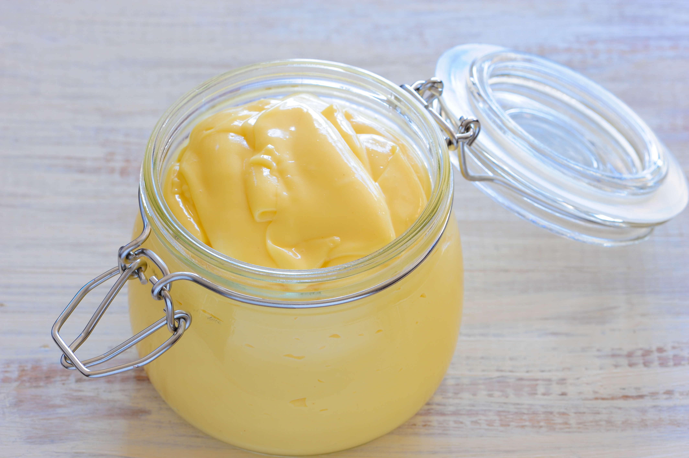

Home
Homemade Mayonnaise

Credit:Wikimedia
Description
This is a mix and match of the ingredients of mayonnaise that I made to my taste and the instructions from InspiredTaste to ensure that this recipe will work. This recipe will make roughly two cups of mayonnaise.
Note:To make mayonnaise, a process known as emulsion is used. This process requires the specific set of
ingredients to be mixed as specified in the recipe.
Ingredients:
- 1 large egg
- 1+ tablespoons (to taste) of squeezed lemon / white wine vinegar / red wine vinegar
- 1+ tablespoons (to taste) of dijon mustard
- 1 teaspoon salt
- 1 teaspoon white pepper
- 250 ml canola oil (or any mild vegetable oil)
Steps:
- Prepare equipment: You will need to be able to mix the ingredients very quickly and thoroughly. It is
recommended to use a blender or food processor, but an emulsifier or even a whisk would be possible (expect
a sore arm though). This is necessary for the oil and water based ingredients to mix into a stable emulsion.
- Add the egg, half of the oil, mustard and lemon juice in the container and mix. You will
hopefully see that everything is mixing and bubbling into a single frothy blend.
- Once the mix starts to thicken, you can relax because this is a sign that it started to emulsify. If you
prefer a thicker consistency, add more oil.
- Now you are free to add the salt, white pepper and extra mustard and lemon juice to taste. I added an extra
2 tablespoons of lemon juice and 2 tablespoons of mustard.
- Once you are satisfied with your creation, you may use it or place it in the fridge (Placing the
mayonnaise in a fridge will thicken it even more!). In the fridge it could last up to 2 weeks.